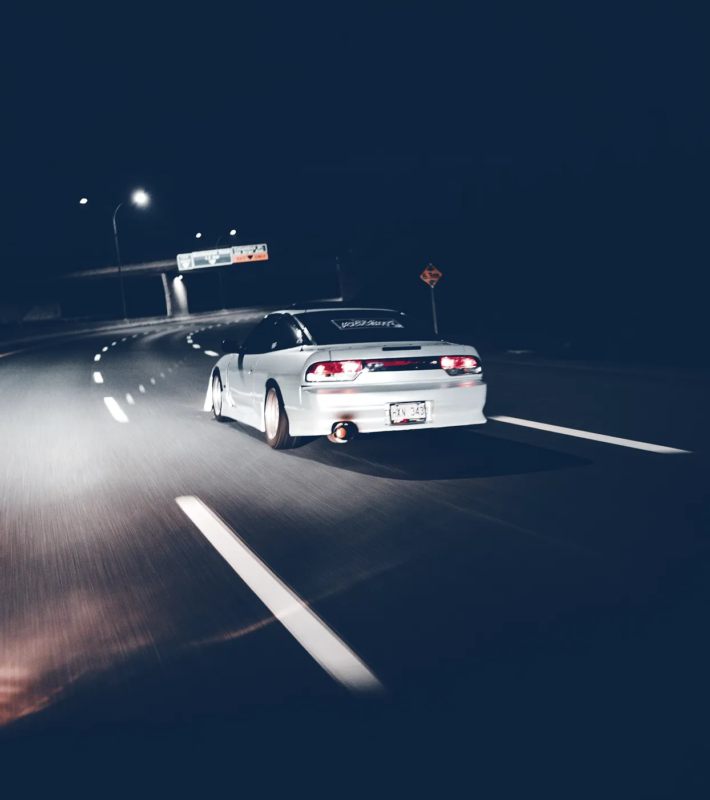
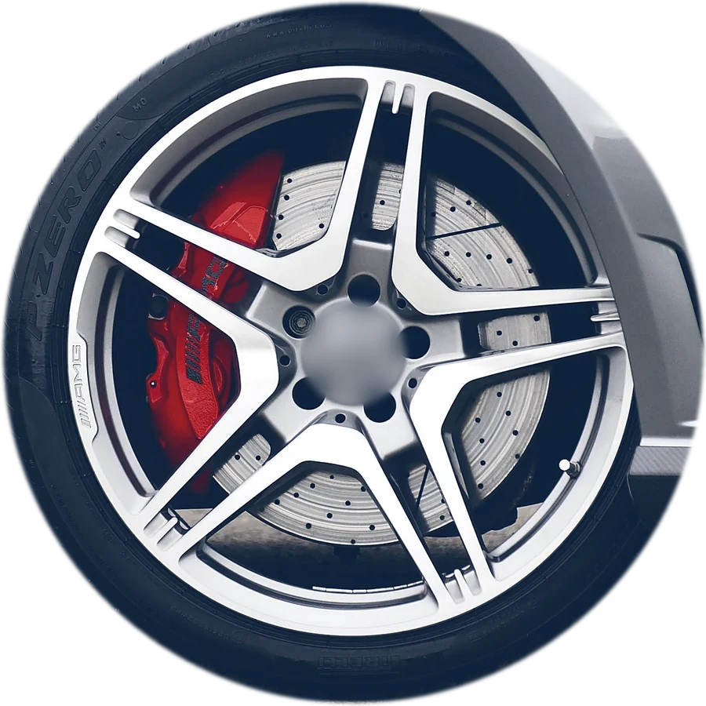
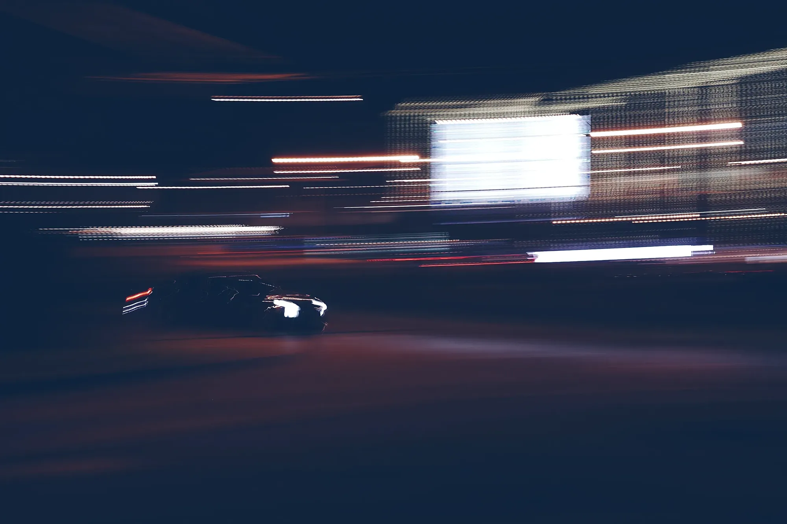

02
What happened?
On call 24/7
Emergency
tyre fitting
A blowout, a flat or a puncture, day or night: urgent tyre replacement wherever you've stopped, at home, at work or at the roadside.
Call 01304 35020001Stopped
Callback WhatsApp 01304 350200

Mobile tyre fitting, repairs and roadside help at home, at work or at the roadside. Day or night, 365 days a year, across Dover & Kent.
Call 24/701304 350200 Or WhatsApp 07842 290576
On call 24/7
A blowout, a flat or a puncture, day or night: urgent tyre replacement wherever you've stopped, at home, at work or at the roadside.
Call 01304 350200Seven more fixes · one number
Choose a fix to see what we do.
New premium, mid-range or budget tyres for cars, vans and 4x4s, fitted at home, at work or at the roadside.
Tyres from Michelin, Bridgestone, Continental, Goodyear, Pirelli and Dunlop. The quoted price includes fitting, a new valve, wheel balancing and old-tyre disposal.
Answered day or night, 365 days a year. Your registration or tyre size and where you are: that's all we need.
01304350200Leave your number and we'll ring you back.
Founded in Dover in 2010. We cover Dover and towns right across Kent: at home, at work or at the roadside.